После запуска приложения на экране отображается окно авторизации.
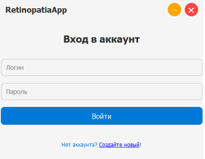
В данном окне пользователь может:
Для авторизации необходимо:
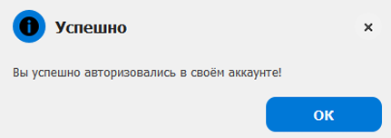
Если аккаунт отсутствует необходимо нажать кнопку «Создайте новый».
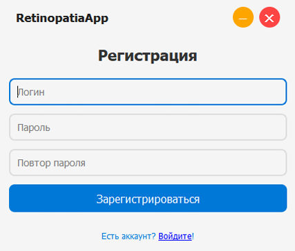
После авторизации открывается главный экран приложения.
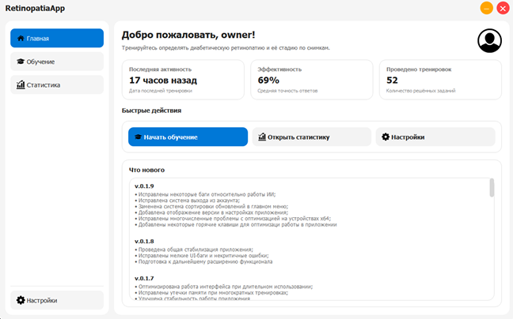
На главной странице отображается:
Кнопки быстрого доступа:
Для начала тренировки необходимо выбрать пункт «Обучение» в боковом меню.
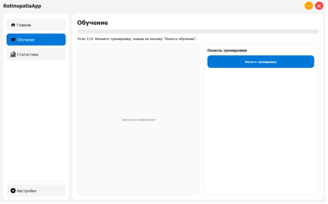
На первом этапе необходимо нажать кнопку «Начать тренировку».
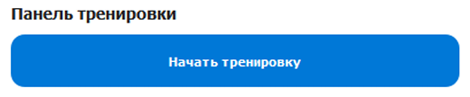
После этого приложение автоматически загружает изображение глазного дна из встроенного набора данных.
После загрузки изображения необходимо:
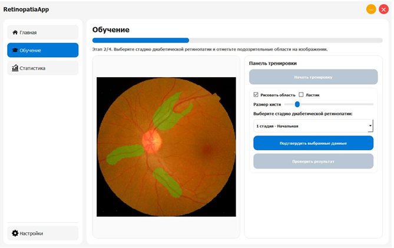
После завершения разметки необходимо нажать кнопку «Подтвердить выбранные данные».
Это действие фиксирует выбор пользователя и переводит тренировку на следующий этап.
Для запуска анализа необходимо нажать кнопку «Проверить результат».
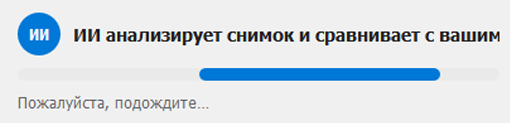
ИИ анализирует изображение, определяет стадию патологии и строит тепловую карту области внимания.
После завершения анализа отображается результат.
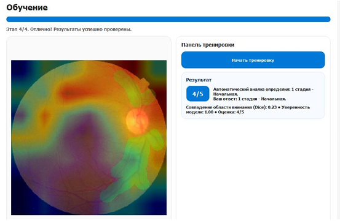
Пользователь может увидеть:
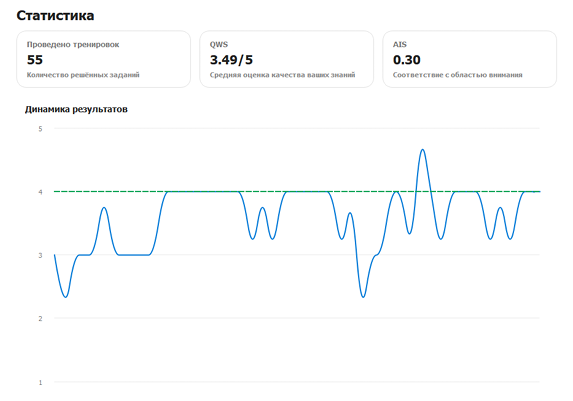
Во вкладке «Статистика» отображается прогресс пользователя.
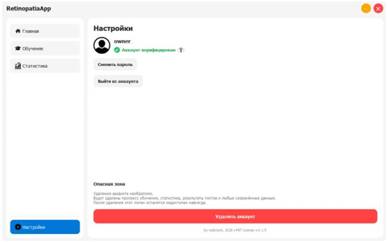
Пользователь может:
Для завершения работы можно:
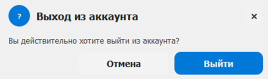
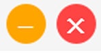